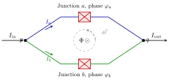
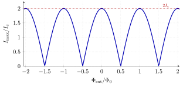

3 The DC SQUID
Flux quantisation in a simply-connected superconducting ring, established in §1.6, generalises when the ring is interrupted by two Josephson junctions: the bulk condensate phase is no longer forced to wind by integer multiples of \(2\pi\) around the loop, because the wavefunction can jump across each junction. What survives is a constraint on the sum of (i) the phase drops across the junctions and (ii) the line integral of the vector potential along the superconducting arms. This constrained two-path interferometer is the DC SQUID (Superconducting QUantum Interference Device).
The Josephson junction itself — its tunnelling Hamiltonian, the current–phase relation \(I = I_c \sin\delta\) and the energy \(E_J\) — is treated formally in Ch. 4. Here we only need the phase-accumulation rule on a junction (a phase drop \(\delta\)) and the supercurrent relation, which we take as given.
3.1 2.1 DC SQUID: basic structure
A SQUID consists of two Josephson junctions connected in parallel to form a closed superconducting loop (Fig. 1). A bias current \(I_{\text{in}}\) enters at node \(p\) and splits into an upper branch (path \(a\), carrying \(I_a\)) and a lower branch (path \(b\), carrying \(I_b\)); the two branches recombine at node \(q\) to form the output current \(I_{\text{out}} = I_a + I_b\). A magnetic flux \(\Phi\) threads the loop, produced by an externally applied field plus the self-field of the circulating currents.
The device has two remarkable consequences that we will derive in the next sections:
- Sensitivity. The critical current \(I_{\max}(\Phi_{\text{ext}})\) is a periodic function of the external flux with period \(\Phi_0 \simeq 2.07\times10^{-15}\,\mathrm{Wb}\), making the DC SQUID the most sensitive magnetometer ever built.
- Tunability. Embedded in a superconducting qubit, the SQUID replaces a single junction by an effective junction whose Josephson energy can be tuned by a small coil current (Ch. 5).

3.2 2.2 Phase accumulation along the two paths
We now compute how the superconducting phase varies along each branch. Writing the Cooper-pair condensate as \[ \psi(\mathbf r) = |\psi(\mathbf r)|\, e^{i\theta(\mathbf r)}, \] the gauge-invariant gradient that controls the supercurrent (cf. §1.4) is \[ \nabla\theta - \frac{q^*}{\hbar}\mathbf A, \qquad q^* = 2e. \] Inside a bulk superconductor in the Meissner regime the supercurrent density is negligible deep in the wire, so the condensate momentum vanishes there and \(\nabla\theta = (2e/\hbar)\mathbf A\) along the bulk of each arm. Integrating from \(p\) to \(q\) along path \(a\) in the bulk: \[ \int_p^q \nabla\theta \cdot d\vec\ell = \theta(q^-) - \theta(p^+) = \frac{2e}{\hbar}\int_p^q \mathbf A \cdot d\vec\ell \Big|_a, \] where \(p^+\) and \(q^-\) denote the points just inside the superconducting electrodes adjacent to junction \(a\). Across the junction the wavefunction is not a single condensate: there is a phase discontinuity which we denote \(\delta_a\) (the Josephson phase drop, see Ch. 4). Adding it to the bulk contribution, the total phase accumulated along path \(a\) from \(p\) to \(q\) is \[ \boxed{\;\Delta\theta_a \;=\; \delta_a \;+\; \frac{2e}{\hbar}\int_p^q \mathbf A \cdot d\vec\ell\Big|_a\;} \] and similarly for path \(b\): \[ \Delta\theta_b \;=\; \delta_b \;+\; \frac{2e}{\hbar}\int_p^q \mathbf A \cdot d\vec\ell\Big|_b. \]
- \(\delta_a,\delta_b\) are the Josephson phase drops across the two junctions (defined as \(\theta\) inside the right electrode minus \(\theta\) inside the left electrode of each junction).
- \(\mathbf A\) is the electromagnetic vector potential; the integrals are taken along the bulk of each arm.
3.3 2.3 Single-valuedness of the wavefunction
The microscopic wavefunction at point \(q\) must take a single value, independently of the path chosen from \(p\). The two phase accumulations \(\Delta\theta_a\) and \(\Delta\theta_b\) refer to the same condensate phase at the same physical endpoint, so they can differ at most by an integer multiple of \(2\pi\): \[ \Delta\theta_a \;=\; \Delta\theta_b \;+\; 2\pi n, \qquad n\in\mathbb Z. \] We restrict attention to the \(n=0\) branch (no fluxoid trapped at zero external bias); the general case is recovered by the obvious shift. Equating the two expressions of §2.2 gives \[ \delta_a + \frac{2e}{\hbar}\int_a \mathbf A\!\cdot\!d\vec\ell \;=\; \delta_b + \frac{2e}{\hbar}\int_b \mathbf A\!\cdot\!d\vec\ell, \] which we rearrange as a closed-contour integral by reversing the orientation of the lower branch: \[ \delta_b - \delta_a \;=\; \frac{2e}{\hbar}\Bigl[\int_a \mathbf A\!\cdot\!d\vec\ell \;-\; \int_b \mathbf A\!\cdot\!d\vec\ell\Bigr] \;=\; \frac{2e}{\hbar}\oint_{\Gamma} \mathbf A\!\cdot\!d\vec\ell, \] where \(\Gamma\) is the loop traversed up along \(a\) from \(p\) to \(q\) and back along \(b\) from \(q\) to \(p\) (the dashed contour in Fig. 1).
By Stokes’ theorem, \[ \oint_{\Gamma}\mathbf A\!\cdot\!d\vec\ell \;=\; \iint_{S(\Gamma)} (\nabla\times\mathbf A)\!\cdot\!d\vec S \;=\; \iint_{S(\Gamma)} \mathbf B\!\cdot\!d\vec S \;\equiv\; \Phi, \] the magnetic flux through any surface bounded by \(\Gamma\). Therefore \[ \boxed{\;\delta_b - \delta_a \;=\; \frac{2e}{\hbar}\,\Phi \;=\; 2\pi\,\frac{\Phi}{\Phi_0}\;}, \qquad \Phi_0 \equiv \frac{h}{2e}. \]
3.4 2.4 Total current through the SQUID
Each Josephson junction obeys the DC Josephson relation (derived in Ch. 4) \[ I_j \;=\; I_c \sin\delta_j, \qquad j=a,b, \] where \(I_c\) is the critical current (assumed identical for the two junctions; the asymmetric case generalises straightforwardly). The total current that exits the device at \(q\) is \[ I \;=\; I_a + I_b \;=\; I_c\bigl(\sin\delta_a + \sin\delta_b\bigr). \] Using the sum-to-product identity \[ \sin x + \sin y \;=\; 2\sin\!\frac{x+y}{2}\cos\!\frac{x-y}{2}, \] and introducing the symmetric and antisymmetric combinations \[ \delta \;\equiv\; \frac{\delta_a + \delta_b}{2}, \qquad \frac{\delta_b - \delta_a}{2} \;=\; \pi\,\frac{\Phi}{\Phi_0}, \] where the second equality is the flux constraint of §2.3, we obtain \[ I(\delta,\Phi) \;=\; 2 I_c \cos\!\Bigl(\pi\frac{\Phi}{\Phi_0}\Bigr)\,\sin\delta. \] The SQUID therefore behaves as a single effective Josephson junction whose critical current is modulated by the external flux: \[ \boxed{\;I(\delta,\Phi_{\text{ext}}) \;=\; I_{\max}(\Phi_{\text{ext}})\,\sin\delta, \qquad I_{\max}(\Phi_{\text{ext}}) \;=\; 2 I_c\,\Bigl|\!\cos\!\Bigl(\pi\,\frac{\Phi_{\text{ext}}}{\Phi_0}\Bigr)\Bigr|\;.} \] The absolute value reflects the experimental definition of the critical current as the maximum DC current the device can support; the sign of \(\cos(\pi\Phi/\Phi_0)\) can always be absorbed into \(\delta \to \delta + \pi\).
The structure of the result is exactly that of a two-path interferometer:
- two paths \(\;\to\;\) the two Josephson junctions in parallel
- phase difference \(\;\to\;\) set by the enclosed magnetic flux, \(2\pi\Phi/\Phi_0\)
- interference fringes \(\;\to\;\) rectified-cosine modulation of the critical current
The pattern is periodic in \(\Phi_{\text{ext}}\) with period \(\Phi_0\). At integer flux quanta the two junctions add constructively (\(I_{\max} = 2I_c\)); at half-integer flux quanta they interfere destructively and the supercurrent through the device is completely suppressed.

3.5 Sources
- Lecturer’s lecture notes, §2 (Braggio, Introduction to Quantum Hardware, Univ. of Padova, 2026).
- Tinkham, M. Introduction to Superconductivity, 2nd ed., Dover (2004), §6.4 (“Quantum Interference”), pp. 230–235.